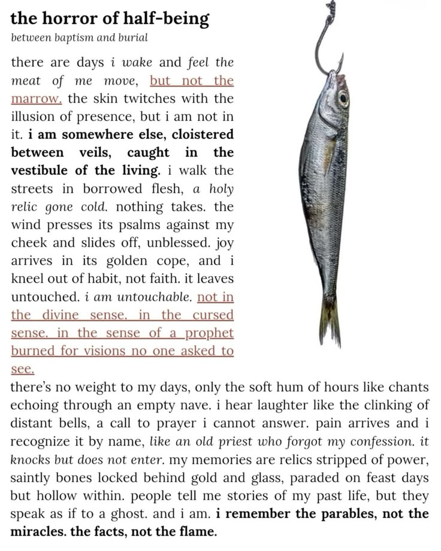

the horror of half-being
between baptism and burial
there are days i wake and feel the meat of me move, but not the marrow. the skin twitches with the illusion of presence, but i am not in it. i am somewhere else, cloistered between veils, caught in the vestibule of the living. i walk the streets in borrowed flesh, a holy relic gone cold. nothing takes. the wind presses its psalms against my cheek and slides off, unblessed. joy arrives in its golden cope, and i kneel out of habit, not faith. it leaves untouched. i am untouchable. not in the divine sense. in the cursed sense. in the sense of a prophet burned for visions no one asked to see.
there's no weight to my days, only the soft hum of hours like chants echoing through an empty nave. i hear laughter like the clinking of distant bells, a call to prayer i cannot answer. pain arrives and i recognize it by name, like an old priest who forgot my confession. it knocks but does not enter. my memories are relics stripped of power, saintly bones locked behind gold and glass, paraded on feast days but hollow within. people tell me stories of my past life, but they speak as if to a ghost. and i am. i remember the parables, not the miracles. the facts, not the flame.
